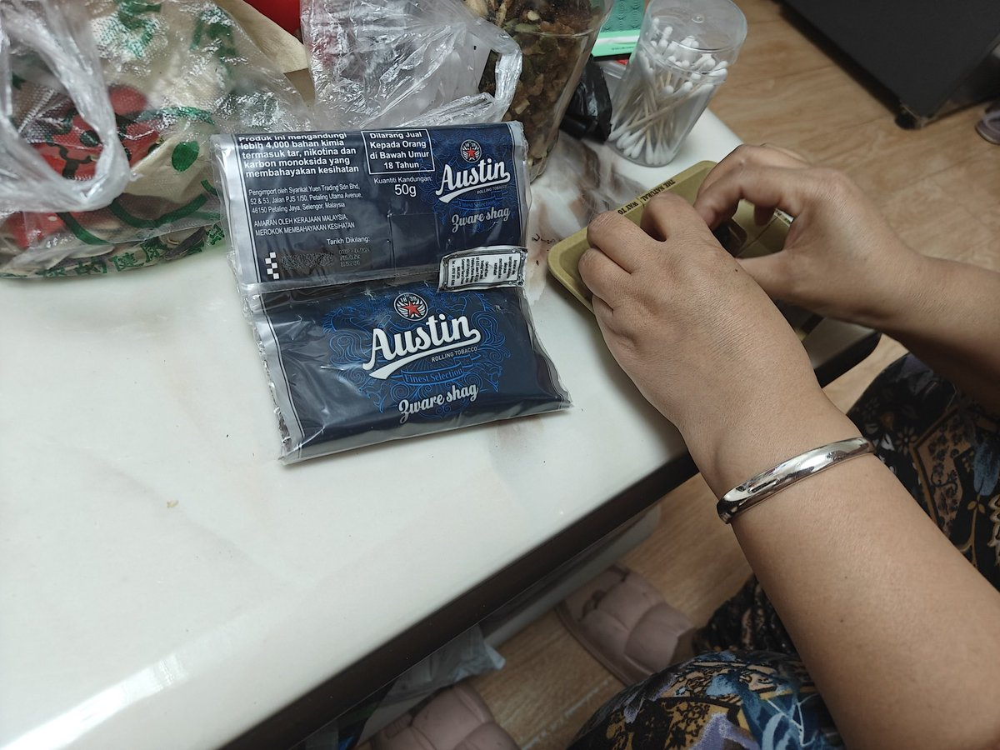

其实我总是和父母吵架，我的家庭关系也很复杂，我这一生矛盾的点在于我永远都在一刻不停的逃离家庭，但我不停的狂奔又是为了爸爸妈妈能以我为荣让我成为炫耀的谈资。
永远忘不了姐姐的那句“你知不知道我离婚就是因为你是个精神病他看不起咱家…..”
我和我姐姐一年也说不了几句话，她说这种话我也只是笑笑，翻到妈妈找借口的说我把烟草弄的满桌子很脏来帮我把烟都卷好

永远忘不了姐姐的那句“你知不知道我离婚就是因为你是个精神病他看不起咱家…..”
我和我姐姐一年也说不了几句话，她说这种话我也只是笑笑，翻到妈妈找借口的说我把烟草弄的满桌子很脏来帮我把烟都卷好

其实我总是和父母吵架，我的家庭关系也很复杂，我这一生矛盾的点在于我永远都在一刻不停的逃离家庭，但我的一刻不停的狂奔又是为了爸爸妈妈能以我为荣让我成为炫耀的谈资。
永远忘不了姐姐的那句“你知不知道我离婚就是因为你是个精神病他看不起咱家…..” https://t.co/geSb860eC8
永远忘不了姐姐的那句“你知不知道我离婚就是因为你是个精神病他看不起咱家…..” https://t.co/geSb860eC8